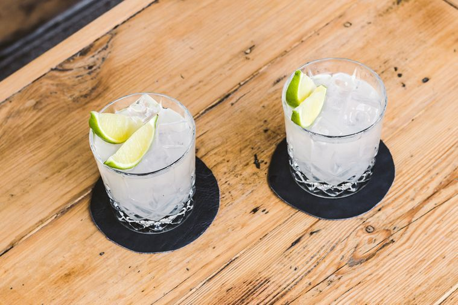

Tommy's Margarita

Our first Daisy recipe, the Tequila Daisy
Margarita is the spanish word for "daisy". The Daisy is a family of cocktails made with citrus juice, sweetened with syrup or a liquer, and fortified with a base spirit.
Tommy's Margarita was created by Julio Bermejo at Tommy's Mexican Restaurant in the early '90s.
This classic recipe has recently had a resurgence within the mixology community with the rise of high quality additive free Tequila.
Ingredients
- 2 ounces of Tequila
- 1 ounce of fresh Lime Juice
- 3/4 ounce of Agave Syrup
- 4 drops of Saline Solution(80:20 ratio of water to salt.)
Directions
- Add lime juice to shaker.
- Add agave syrup to shaker.
- Add tequila to shaker.
- Add 4 drops of saline solution to shaker.
- Crack 2 large rocks of ice into the shaker.
- Shake until cocktail has been properly diluted. About 12-15 seconds if using large rocks.
- Dirty pour cocktail into your salt rimmed double rocks glass.
Home